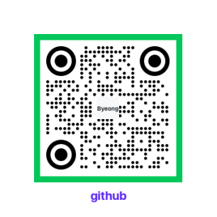

3년 차 프론트엔드 개발자 김병관입니다. 주로 대규모 서비스 운영 경험을 통해 예외 상황을 하나씩 정리하고 안정적으로 동작하게 만드는 일에 익숙해졌습니다. 빠르게 만드는 것보다 왜 그렇게 동작하는지 이해하고 개발하는 과정을 더 중요하게 생각합니다. 아직 배워야 할 부분도 많지만, 주어진 문제는 끝까지 파고들어 해결하려는 편이며 안정적인 사용자 경험을 만드는 프론트엔드 개발자로 성장하고 싶습니다.
대규모 B2C 서비스(티월드) 프론트엔드 개발 및 운영 안정화. BFF API 연동 및 예외 처리 로직 개선. DataDog를 활용한 에러 로그 조회 및 이슈 파악, 재발 방지 문서 작성.
기술 환경: JavaScript(ES3-ES6 호환), TypeScript, Node.js(Express BFF), DataDog, Jenkins, Git, GitLab, jquery
1. Movie React Demo — 넷플릭스 클론
배포: Movie React Demo — 영화 API 기반 넷플릭스 클론 ("https://movie-react-demo-app.vercel.app/")
TMDB API를 활용한 영화 검색 및 정보 제공 애플리케이션
기술: React 18, React Router, Axios, TMDB API, Styled-components
구현: 영화 검색/필터링, 상세 정보, 무한 스크롤, 이미지 lazy loading
GitHub_Repository: GitHub 이동
2. Phonebook Demo — 연락처 관리 앱 (Zustand)
배포: Phonebook Demo (Zustand) — 전역 상태 관리 데모 ("https://zustand-phonebook-demo-alpha.vercel.app/")
Zustand 전역 상태 관리 학습용 프로젝트
기술: React 18, Zustand, TypeScript
구현: 연락처 CRUD, 검색/정렬, 그룹 분류, TypeScript 타입 안정성
GitHub_Repository: GitHub 이동
개발자 커뮤니티를 위한 Q&A 플랫폼. 스팸 방지 시스템과 미디어 지원 기능 포함. 1인 풀스택 개발.
기술 스택: Spring Boot 3, Java 17, PostgreSQL, MyBatis, Thymeleaf, Docker Compose, Flyway
성과: 페이징 적용으로 목록 로딩 흐름을 개선하고, 승인 워크플로우 도입으로 스팸 게시글 유입을 효과적으로 차단
react-study: 컴포넌트 단위 설계, Hooks 기반 상태 관리 학습
hnm-react-router-practice: React Router 라우팅 패턴 실습